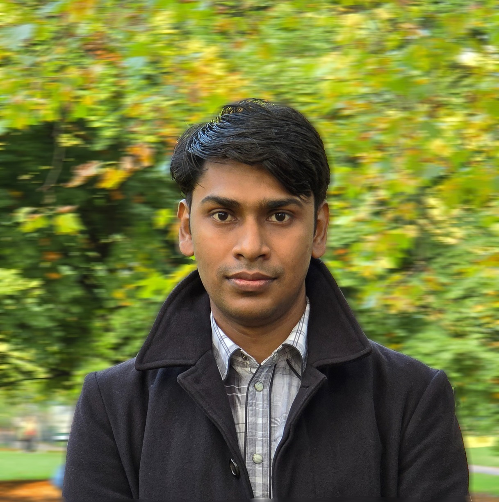

Riyazul Samad
Binmohammad
Urban Researcher • Architect • Urban Designer
Bridging spatial data science, qualitative field methods, and resilient urban landscape architecture. Investigating urban water commons, flood resilience in sacred riverine precincts, and democratized spatial stewardship across South Asian metropolises.

Queen's College, Cambridge
Department of Architecture • Centre for Urban Conflicts Research
Architecture & Urban Studies
Queen's College • Chevening Scholar • Seear Research Awardee (2024–2025)
Master of Urban Design
First Class Distinction (2016–2018) • Metro-Led Transformation in Lucknow
Ponds Rejuvenated
Amrit Sarovar Mission • Bioremediation, percolation & community assemblies
Smart City Masterplans
Mahakaleshwar MRIDA II (AFD) • Yamuna O-Zone Eco-Zoning (Delhi)
Blue-Green Spaces as Social-Ecological Commons
Contemporary urban design across South Asia frequently reduces water bodies either to commercialized real estate waterfronts or to channelized flood conduits. My scholarship challenges this division by framing blue-green spaces as biocultural water commons — inextricably woven with ritual assemblies, sacred geomorphology, informal livelihood ecologies, and vernacular climate resilience.
Through empirically grounded field investigations along the Yamuna floodplain in New Delhi, sacred temple tanks in Ujjain, and historic canal corridors in Lucknow, my work integrates computational hydrology, trip-generation modelling, participatory gamification, and oral histories to formulate equitable, resilient spatial governance frameworks.
Nature-based Solutions calibrated for monsoon flash flooding, riparian buffering, and urban heat island mitigation.
Revitalization of historic kunds, ghats, and pilgrim-water interfaces respecting vernacular biocultural practices.
Non-digital civic games and co-design frameworks preventing green gentrification and empowering low-literacy communities.
Analytical & Spatial Toolsets
“Rivers do not recognize administrative cadastre; true resilience demands listening to both hydrological flows and oral community memories.”
Core Research Interests
Sacred Landscapes in South Asian River Cities
Investigating the socio-religious entanglement of ghats, riverbanks, and pilgrim assemblies in cities like Ujjain, Varanasi, and Delhi. Deciphering how vernacular sacred practices can be mobilized for conservation rather than pollution, framing water bodies as biocultural and social-ecological systems.
Nature-based Solutions for Floods & Heat Stress
Quantifying urban parks' cooling radii, microclimate modulation, and floodplain attenuation. Utilizing QGIS and empirical temperature logging to assess how urban forests in Lucknow and Delhi counter the Urban Heat Island (UHI) phenomenon while examining governance, justice, and community stewardship.
Heritage Conservation & Public Space
Analyzing the informal dynamics of Delhi settlements and upper Himalayan historic fabric in Leh. Developing participatory co-creation, value-based urban design methods, and inclusive digital exhibits (Red Fort Museum) that safeguard marginalized community tenures and vernacular memory.
Selected Projects & Case Studies
Major initiatives spanning smart city masterplans, floodplain conservation, transit precincts, and pond rejuvenation across India and Europe.

Yamuna River Floodplain & Nature-based Solutions
Field research across 10 selected floodplain sites, 17 key expert interviews, and 350 community surveys. Designed eco-zoning frameworks and retention reservoirs under DDA O-Zone spatial guidelines and Cambridge Seear Award.

Mahakaleshwar Temple Precinct & MRIDA Phase II
Supported 40-hectare masterplanning across 27 sub-projects preparing for 400M Kumbh Mela pilgrims. Contributed baseline research for ₹186-crore dossier, ecological desilting of Rudrasagar Lake, and Ram Ghat revival under AFD & NIUA.

Transit-Oriented Redevelopment & Metro Transformation
SPA Master's thesis (awarded First Class) and studio proposals examining Lucknow metro-led growth. Trip-generation regression modelling, Mahanagar station node overhaul, and first-last mile pedestrian micromobility networks.

Amrit Sarovar: 70+ Ponds Rejuvenation & Conservation
Directed ecological rejuvenation for over 70 traditional water bodies across northern India under the Amrit Sarovar Mission. Integrated bioremediation flora, percolation basins, and village participatory stewardship protocols.

Mega Kochi Metropolitan Spatial Plan 2050
Directed the social-infrastructure team for the Mega Kochi Metropolitan Plan under the India–EU Urban Partnership for a 2M+ population horizon. Integrated backwater canal transport with sea-level rise resilience reserves.

In-Situ Slum Rehabilitation & UER-II Corridor
Design development for 4,000 units across three in-situ slum rehabilitation projects, 500 3BHK units for two Rohini group-housing developments, alongside Urban Extension Road-II Nature-based ecological corridor strategies.
Publications & Academic Papers
Authored and collaborative scholarship spanning peer-reviewed journals, Springer proceedings, international conference papers, and forthcoming preprints.
Enhancing Urban Climate Resilience through Nature-based Solutions: Assessing the Climate Mitigation Potential of Urban Parks in Lucknow, India
Authors: Binmohammad, Riyazul Samad, Wahaj Akathar Abedeen, Zia Ul Haque, and Anjali Gidwani. Empirical microclimate assessment evaluating cooling radii, canopy metrics, and social-ecological park usage.
Sustainable Urbanisation in Leh City: Navigating the Challenges and Opportunities in the Upper Himalayas
Authors: Binmohammad, Riyazul Samad, Zia Ul Haque, and Wahaj Akathar Abedeen. Presented at the International Conference on Mountain Ecosystem Processes. Vulnerability assessment of water scarcity and high-altitude tourism growth.
Advancing Sustainable and Inclusive Digital Practices in Indian Museums: Addressing Research Gaps through a Case Study of Red Fort Museum, Delhi
Authors: Binmohammad, Riyazul Samad, Zia Ul Haque, and Wahaj Akathar Abedeen. Decolonial museum curations, tactile spatial access, and immersive digital twins for architectural heritage.
Co-Editor, Scroope: The Cambridge Architectural Journal (Issue 34) & ICOM-SUSTAIN 2026 Presentation
Co-editing Issue 34 of Cambridge University Department of Architecture's student-led journal (ISSN 0966-1026). Presenting “Reimagining the Riverine Museum: Curating Urban Flood Management and Biocultural Heritage along the Yamuna River” at ICOM-SUSTAIN 2026.
Boosting Climate Resilience via Accelerating and Mainstreaming Transformative Nature-based Solutions
Sole Author: Binmohammad, Riyazul Samad. Synthesizing global urban water frameworks to propose transformative NbS scaling models for Global South metropolises.
Democratising Nature-based Solutions Through Non-Digital Gamification in Semi-Urban India
Authors: Binmohammad, R. S., W. A. Abedeen, and Z. U. Haque. Testing participatory physical board games to co-design retention wetlands with low-literacy communities.
Learning from Informal Settlements through a Multidimensional Analysis of Delhi Slums
Authors: Binmohammad, R. S., W. A. Abedeen, Z. U. Haque, and A. Gidwani. Deconstructing social capital, spatial micro-economies, and water infrastructure in informal settlements.
Assessing the Impacts of Rapid Urbanisation and Climate Change in a High-Density Metropolitan Context: Evidence from Delhi, India
Sole Author: Binmohammad, Riyazul Samad. Tracking 30-year impervious surface expansion against monsoon runoff peaks and localized inundation hot-spots.
Urban Growth Forecast Using Machine Learning Algorithms and Remote Sensing-Based Techniques
Authors: Binmohammad, Riyazul Samad, and Anjali Gidwani. Predictive computational models using satellite multi-spectral imagery to forecast spatial sprawl and land cover transitions.
Keynote & Global Summits
- • UN Summer Academy (Bonn 2022): “Sustainable Cities: Greening the Grey”
- • Smart City Conference (Lucknow 2021): CITIIS 1.0 Project Presentation
- • Youth Co:Lab (2021): “Indian Cities and SDG Implementation”
Professional Practice
Designed nature-based floodplain solutions for Delhi’s Yamuna O-Zone and contributed to urban design proposals for the UER-II corridor. Designed 4,000 units across three in-situ slum-rehabilitation projects and 500 3BHK units for two Rohini group-housing developments.
Led sustainability-led urban design and research across 15+ projects, integrating NbS, GIS mapping and simulation modelling into climate-responsive proposals. Led community engagement and conservation workshops supporting rejuvenation of 70+ ponds under the Amrit Sarovar Mission; directed the social-infrastructure team for Mega Kochi Metropolitan Plan 2050 (India–EU Urban Partnership, 2M+ pop).
Collaborative research under the Yamuna Urban Design and Action Plan (YUDAP). Conducted research-led urban design and performance analysis for low-carbon, high-density developments using GIS mapping, environmental modelling, and energy simulations across mobility, ecology, water management, and air quality.
Led research-driven urban diagnostics for the Mahakaleshwar Temple precinct preparing tourism infrastructure for 400M Kumbh Mela devotees. Prepared baseline research and funding components for the ₹186-crore programme funded by AFD, NIUA, and MoHUA across a 40-ha masterplan with 27 sub-projects (seven sacred ponds, Rudrasagar Lake, and Ram Ghat).
Contributed to masterplanning across Ayodhya, Palwal, Delhi, Jaipur, Lucknow, and Rajasthan through GIS-enabled base mapping, field surveys, interviews, and stakeholder meetings.
Academic Faculty Experience
Jamia Millia Islamia, New Delhi
Faculty of Architecture and Ekistics. Taught Urban Design Studio, Building Construction & Materials, Architectural Research & Dissertation. Taught GIS applications to M.Arch Urban Regeneration students. Supervised 8 undergraduate dissertations.
Chandigarh University, Mohali
Taught Architectural Design, Conservation, Housing, Urban Planning and Building Construction. Supervised 9 undergraduate dissertations; fulfilled Board of Studies and external examiner responsibilities.
Public Leadership & Honors
India Delegate • 18th BRICS Summit (2026): Selected among 500+ international delegates for IBRICS Investment & Deal Summit 2026; contributed to the Summit resolution.
Keynote Welcome Speech at Chevening House, UK (2025): Delivered address on India-UK bilateral relations alongside Hon’ble External Affairs Minister Dr S. Jaishankar and Hon’ble UK Deputy PM David Lammy.
UNESCO World Heritage Forum (2024): Selected India delegate among 50 international delegates at 46th World Heritage Committee; contributed to resolution and designed official poster.
Co-Founder, Tacit Knowledge Regeneration Foundation (2025–Present): Secured ₹5M from Azim Premji Foundation for climate initiatives bridging indigenous knowledge with science in tribal areas of Jharkhand.
Mentor, Eklavya India & Project Edu Access (2024–Present): Mentored 100+ first-generation learners from marginalised communities; guided 30+ to secure fully funded international scholarships.
Cambridge Academic & College Service (2024–2025): Postgraduate Programme Rep, MPhil Architecture & Urban Studies; Sustainability Officer, Queen's College MCR; Cambridge Zero involvement.
Education & Credentials
University of Cambridge
MPhil in Architecture and Urban Studies
Queen's College • Dissertation on Yamuna River Flood Management and Nature-based Solutions
School of Planning & Architecture (SPA)
Master of Urban Design (M.U.D.)
New Delhi, India • Thesis: Metro as a Catalyst for Urban Transformation in Lucknow
Dr APJ Abdul Kalam Technical University
Bachelor of Architecture (B.Arch)
Faculty of Architecture, Lucknow • Thesis: Sunder Nagri Slum Renewal (Patrick Geddes Approach)
Initiate Research Dialogue or Project Advisory
Open to academic research collaborations, university guest lectures, metropolitan masterplanning advisories, and speaking engagements on resilient water commons, Nature-based Solutions, and participatory spatial justice.